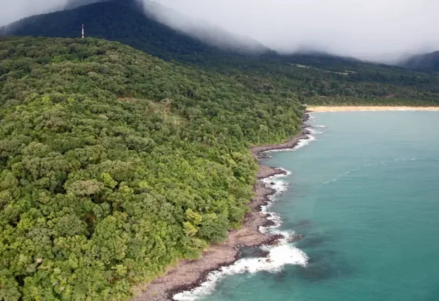

Data
Area: 71,740 km²
Population: About 8.9 million
Capital: Freetown
Languages: English, Krio, and other local languages
Currency: Sierra Leonean Leone
Time Zone: GMT (UTC+0)
Weather
Condition: Partly Cloudy
Temperature: 27 °C
Wind Speed: 10 km/h
Wind Chill: N/A